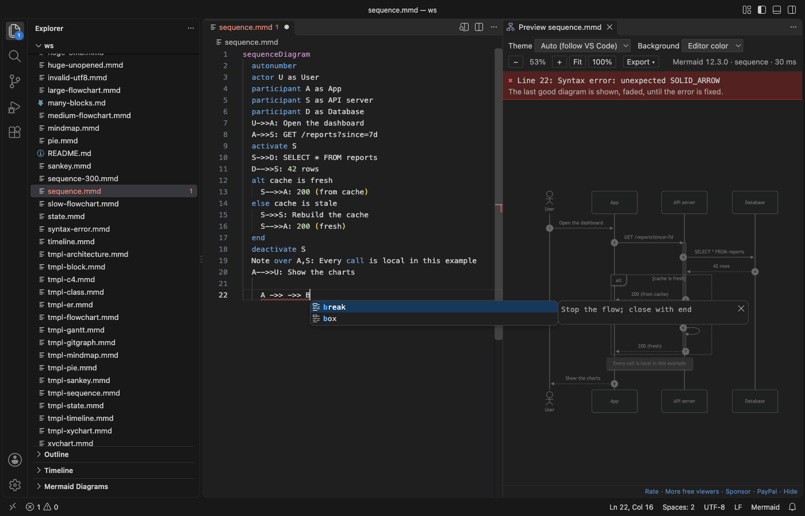

Open files in VS Code and Cursor / Docs and diagrams
Find the line with the Mermaid syntax error
Mermaid stops at the first thing it cannot parse, and many renderers only show a generic error picture. Mermaid Viewer draws your diagram in VS Code as you type, and when the text breaks it underlines the line in red, lists the error in the Problems panel and shows it at the top of the preview with the line number. The last good diagram stays on screen, faded, until you fix it. In a Markdown file, each mermaid block gets its own error line. Zovo Pro (USD 19 once) adds an export of all diagrams in the workspace that lists every diagram that could not be drawn, plus PDF export and export on save, with 3 free tries each.
Free, MIT license. Extension ID zovo.mermaid-viewer, version 0.3.5. Needs VS Code 1.90.0 or newer.

Steps in VS Code
- Install Mermaid Viewer from the Marketplace, or press Ctrl+P (Cmd+P on macOS) and run
ext install zovo.mermaid-viewer. - Open the
.mmdor.mermaidfile and click the preview icon at the top right of the editor, or press Ctrl+K V (Cmd+K V on macOS). In a Markdown file, click "Preview" above the mermaid block. - Read the red line at the top of the preview. It names the line and what Mermaid expected.
- Click that error line to put the cursor on the line in the source. The same line is underlined in red and listed in the Problems panel while the preview is open.
- Fix the text. Completion offers the keywords, arrows and shapes of the diagram type, which catches a wrong arrow fast.
- The preview draws again 100 ms after you stop typing, and the faded drawing turns into the new one.
Where Zovo Pro saves time
The live preview, the error line, the red underline and Problems entry, completion, the 15 templates, the Mermaid Diagrams list and PNG and SVG export of one diagram are free. Mermaid 12.3.0 ships inside the extension, so it needs no sign-in and no network.
In a docs folder with many Markdown files, a broken diagram can hide for months. Export All Diagrams in Workspace draws every diagram of every .mmd, .mermaid and Markdown file in the folder to SVG, PNG or both, into mermaid-export/. At the end it says how many could not be drawn, and "Show problems" opens a list with the file, the block number and the error of each one. The other Pro tools are PDF export with a title page and export on save.
With Export All Diagrams in Workspace (Zovo Pro)
- Run "Mermaid Viewer: Export All Diagrams in Workspace (SVG/PNG) (Pro)" from the Command Palette, or click it in the Pro tools row under the preview toolbar.
- Pick SVG, PNG or both.
- When the message says that some diagrams could not be drawn, click "Show problems" and fix each one.
Export All Diagrams in Workspace works 3 times on your computer before it asks for a license, and a try counts only when you get a result. Opening a file shows no popup and no countdown.
Zovo Pro costs USD 19 once. It is not a subscription, and it turns on the Pro tools in every Zovo extension, not only Mermaid Viewer. After a card payment (Stripe) your license key shows on the next page. In VS Code, run "Zovo Pro: Enter Zovo Pro license key" from the Command Palette and paste it. The key is checked on your computer, with no network call. With GitHub Sponsors, pick the "$19 one time" tier, then run "Zovo Pro: I already paid: unlock with GitHub Sponsors" and sign in with the same GitHub account. With PayPal, send USD 19 with "Zovo Pro" in the note and the key comes by email within a day.
A team of 5: USD 59 once, by card or by PayPal. Every rule and every Pro tool is on the Zovo Pro page.
Steps in Cursor, Windsurf or VSCodium
- Open the Extensions view with Ctrl+Shift+X (Cmd+Shift+X on macOS).
- Search for
zovo.mermaid-viewerand click Install. Cursor, Windsurf and VSCodium install from Open VSX, where it is published aszovo/mermaid-viewer. - If your editor has no gallery, download the .vsix from the Open VSX page and run "Extensions: Install from VSIX...".
- Then use it the same way as in VS Code.
What Mermaid Viewer handles
.mmdand.mermaidfiles and mermaid blocks in Markdown.- Flowchart, sequence, class, state, ER, Gantt, pie, gitGraph, mindmap, timeline, sankey, XY chart, block, C4 and architecture diagrams.
- A Markdown file where one broken block does not hide the others.
What it does not do
- The red underline and the Problems entry come from the open preview. Close it and they go away.
- Mermaid reports the first error it meets, so a second mistake shows only after you fix the first.
- Diagrams over 500,000 characters or 2,000 links are not drawn until you raise the setting.
- Math in labels may not look right, because the KaTeX fonts are not bundled.
Other options
- Mermaid Live Editor. The free web editor from the Mermaid project shows the parse error under the text. You copy the diagram into the browser.
- mermaid-cli. The
mmdccommand draws a diagram from the terminal and prints the parse error. Needs Node.js and a headless browser.
Install counts and Open VSX status were checked on 13 November 2026. Descriptions in quotes are the extensions' own.
Questions
Why does it say unexpected SOLID_ARROW or similar?
Those are names from Mermaid's parser. They mean Mermaid met an arrow or a word where it did not expect one, often a missing participant name or a stray arrow.
Does it work for mermaid blocks in a README?
Yes. Each block in a Markdown file is drawn on its own with its own error line.
Does my diagram leave my computer?
No. Mermaid runs inside the extension and the preview has no network access.
Does it work in Cursor or Windsurf?
Yes. Cursor, Windsurf and VSCodium install extensions from Open VSX. Search for the extension in their Extensions view and install it there.
More about Mermaid Viewer
Read the Mermaid Viewer page for every feature and setting, or the source code on GitHub.
Related guides
- Mermaid Diagram Editor & Viewer on the VS Code Marketplace (also on Open VSX). Live Mermaid preview beside the code, with PNG and SVG export.
- Preview Mermaid diagrams in VS Code
- Export a Mermaid diagram to PDF
- Find and edit the Mermaid diagrams in a long Markdown file
- Preview a reStructuredText (.rst) file in VS Code
Zovo Pro and support
Zovo Pro: USD 19 once, every Zovo viewer. It turns on the Pro tools in this extension and in the other Zovo extensions you use. The free features stay free.
After a card payment your license key shows on the next page. Paste it with the command "Zovo Pro: Enter a key".
You can also support the work with no Pro:
Need your format supported?
Open a format request with a sample file, and I reply there whether it can be done. For USD 299 once, through this GitHub Sponsors tier, I add your file format or a missing feature to this extension, with tests, within 7 days.